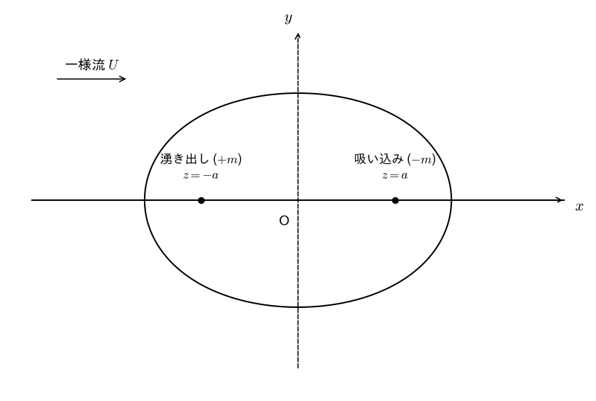
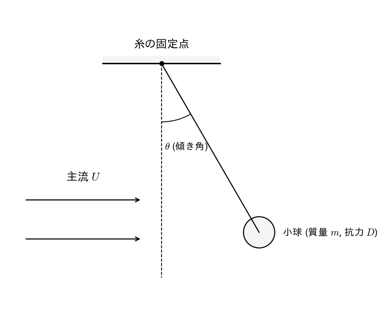

図1 平板上の層流境界層の概略図
試験時間： 90分
満点： 78点満点（第1問 27点、第2問 35点、第3問 16点）
注意： 計算過程もわかりやすく記述すること。
図1に示すように、平板壁面（ $y = 0$ ）の上に発達する 2次元定常・非圧縮性の層流境界層を考える。平板の前縁（ $x = 0$ ）から主流方向（下流方向）に座標軸 $x$ を、壁面に垂直な方向に座標軸 $y$ をとる。また、主流速度（境界層外縁での速度）を $U$、境界層厚さを $\delta(x)$ とする。
図1 平板上の層流境界層の概略図
この層流境界層内の流速分布 $u(y)$ を、正弦関数を用いて次の簡易モデルで近似する。 $$u(y) = U \sin\left( \frac{\pi y}{2\delta} \right) \quad (0 \le y \le \delta)$$ この流速近似モデルは、壁面における粘着条件（ $y=0$ で $u=0$ ）および境界層外縁における接続条件（ $y=\delta$ で $u=U$ かつ $\frac{\partial u}{\partial y} = 0$ ）を満たしている。以下の問いに答えよ。
壁面における摩擦応力 $\tau_w$ は、流体の粘性係数 $\mu$ を用いて $\tau_w = \mu \left. \frac{\partial u}{\partial y} \right|_{y=0}$ と定義される。 与えられた流速近似モデルを用いて $\tau_w$ を表すと、次式が得られる。 $$\tau_w = \frac{\pi}{2} \frac{\mu U}{\delta}$$ この式を、流体密度 $\rho$ を含む一般的なスケーリング則の表現： $$\tau_w = \frac{A_2}{A_1} \rho^{A_3} \mu^{A_4} U^{A_5} \delta^{A_6}$$ と比較したとき、定数 $A_1 \sim A_6$ の値は、それぞれ $A_1 = \underline{\text{ (a1) }}$, $A_2 = \underline{\text{ (a2) }}$, $A_3 = \underline{\text{ (a3) }}$, $A_4 = \underline{\text{ (a4) }}$, $A_5 = \underline{\text{ (a5) }}$, $A_6 = \underline{\text{ (a6) }}$ となる。空欄 (a1) 〜 (a6) に入る適切な数値または記号を答えよ。（各2点）
境界層の運動量厚さ $\theta$ は、次式で定義される。 $$\theta = \int_0^\delta \frac{u}{U} \left(1 - \frac{u}{U}\right) dy$$ この定義式に上記の流速近似モデルを代入し、三角関数の加法定理（半角の公式） $\sin^2\phi = \frac{1}{2}(1 - \cos 2\phi)$ を用いて積分を実行すると、$\theta$ は $\delta$ の関数として次のように求まる。 $$\theta = \left( \frac{2}{\pi} - \frac{1}{2} \right) \delta$$ この結果を、定数 $B_1 \sim B_3$ を用いた次の形式： $$\theta = \left( \frac{B_1}{\pi} + B_2 \right) \delta^{B_3}$$ と比較したとき、それぞれの定数は $B_1 = \underline{\text{ (b1) }}$, $B_2 = \underline{\text{ (b2) }}$, $B_3 = \underline{\text{ (b3) }}$ となる。空欄 (b1) 〜 (b3) に入る適切な数値を答えよ。（各3点）
カルマンの運動量積分方程式： $$\frac{\tau_w}{\rho U^2} = \frac{d\theta}{dx}$$ に、(a) および (b) で得られた結果を代入することにより、$\delta(x)$ に関する常微分方程式を導け。 この微分方程式を、平板前縁における境界条件 $\delta(0) = 0$ のもとで解き、局所レイノルズ数 $Re_x = \frac{\rho U x}{\mu}$ を用いて無次元化した境界層厚さの比 $\frac{\delta}{x}$ を表せ。 ここで、円周率を $\pi \approx 3$ と近似し、かつ $C_1$ は小数第1位を四捨五入して小数第1位まで表すとき、比 $\frac{\delta}{x}$ は次の形式： $$\frac{\delta}{x} = C_1 Re_x^{C_2}$$ となる。このとき、定数 $C_1 = \underline{\text{ (c1) }}$, $C_2 = \underline{\text{ (c2) }}$ となる。空欄 (c1), (c2) に入る適切な数値または数式を答えよ。（各3点）
複素平面 $z = x + iy$ において、一様流 $U$（ $x$ 軸の正の方向）の中に、強さ $m$（ $m > 0$ ）の湧き出しを点 $z = -a$ （ $a > 0$ ）に、強さ $m$ の吸い込みを点 $z = a$ にそれぞれ配置した 2次元非圧縮性・湧き出しを伴うポテンシャル流れ（ランキン・オーバル）を考える（図2）。

図2 複素平面上の配置とランキン・オーバル
この流れの複素ポテンシャル $W(z)$ は次式で与えられる。 $$W(z) = Uz + m \log(z+a) - m \log(z-a)$$ ここで、$\log$ は主値をとるものとする。以下の問いに答えよ。
複素速度ポテンシャル $W(z)$、速度ポテンシャル $\phi$、および流れの関数 $\psi$ の間には、 $W = \phi + i\psi$ の関係がある。 極座標表示として $z = x + iy$、 $z+a = r_1 e^{i\theta_1}$、 $z-a = r_2 e^{i\theta_2}$ （ただし $r_1, r_2 \ge 0$、 $-\pi < \theta_1, \theta_2 \le \pi$ ）を代入することにより、流れの関数 $\psi(x, y)$ を表す式を求めよ。 また、次の各項（1〜6）のうち、得られた流れの関数 $\psi$ の式の中に含まれるものには「○」、含まれないものには「×」と答えよ。（各2点） 1. $Ux$ 2. $Uy$ 3. $m \log r_1$ 4. $m \log r_2$ 5. $m\theta_1$ 6. $m\theta_2$
流体中における物体の運動、それに働く流体力学的抗力、およびレイノルズ数の影響について考える。以下の問いに答えよ。
一様な流れ（流速 $U$）の中に質量 $m$ の小球を軽い糸で吊るしたところ、糸が鉛直方向から角度 $\theta$ （ $0 < \theta < \frac{\pi}{2}$ ）だけ傾いた状態で静止した（図3）。このとき小球に働く流体力学的抗力 $D$、重力加速度 $g$、および傾き角 $\theta$ の間に成り立つ力のつり合いの関係式を、$\frac{D}{mg}$ を左辺とする形で導け。ただし、流体による浮力および糸に働く抗力は無視できるものとする。

図3 流れの中の吊り下げられた小球
一般に物体が受ける抗力 $D$ は、流体密度 $\rho$、物体の代表面積 $A$、主流速度 $U$、および抗力係数 $C_D$ を用いて次式で定義される。 $$D = \frac{1}{2} C_D \rho U^2 A$$ (a) の実験系において、小球の質量 $m$ や流体密度 $\rho$、代表面積 $A$ を変更せずに、主流速度を $U$ から $U' = \frac{U}{2}$ に変化させたところ、小球の傾き角 $\theta$ が変化し、結果として小球に働く抗力の値は $D$ のまま変化しなかった（ $D' = D$ ）とする。このときの抗力係数の比 $\frac{C'_D}{C_D}$ の値を求めよ。
球や円柱のような鈍頭物体（Bluff body）の周りの流れにおいて、レイノルズ数 $Re$ を増加させていくと、ある特定の範囲で抗力係数 $C_D$ が急激に低下する「抗力危機（Drag crisis）」と呼ばれる現象が発生する。 例えば、球においてレイノルズ数が $Re \approx 2.0 \times 10^5$ から $Re \approx 4.0 \times 10^5$ へと増加する付近でこの現象が観察される。この現象が発生する物理的な原因について、「境界層の層流から乱流への遷移」および「剥離位置の変化」の2つの観点を必ず含めて、2行〜3行程度で論理的かつ簡潔に説明せよ。